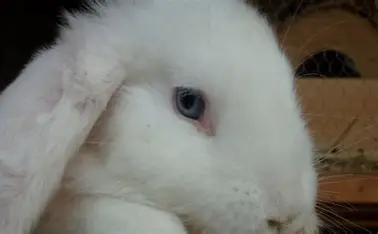

Особливості проживання: будиночок для кролика
Якщо ви зважилися обзавестися кроликами і створити міні-ферму в селі, то на першому етапі необхідно подбати про їх місце проживання. Створюється або використовується вже готове приміщення під крольчатник. Більш компактно звірки розмістяться в 2-х ярусних клітинах. Вміст кроликів закритим способом більш зручний і раціональний. Слід виключити протяги і сирість, тривале перебування на сонці, але створити можливість для провітрювання.
їжа це морква.
